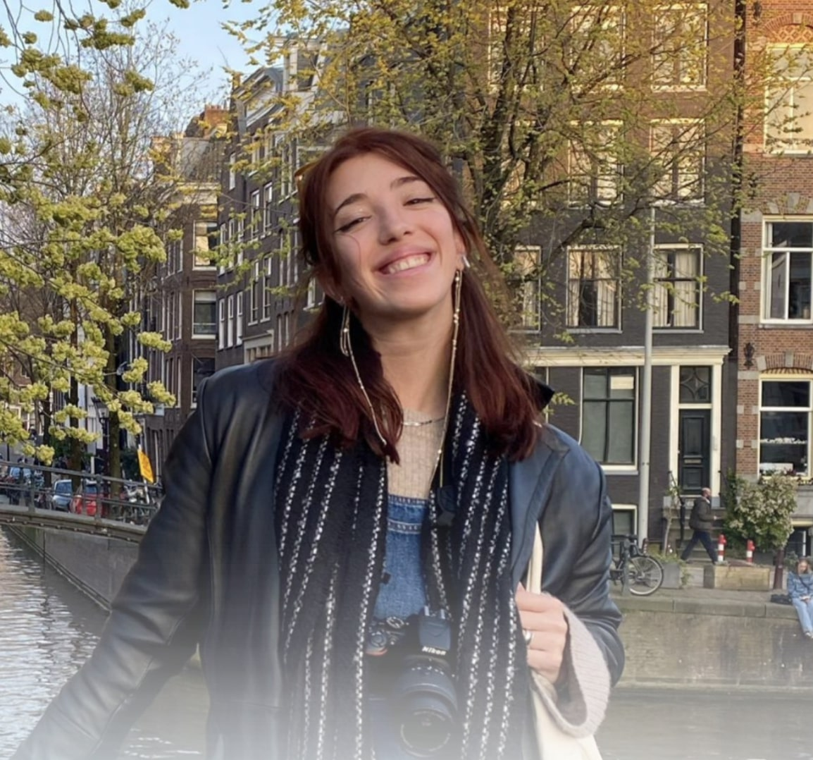

Christina Chatzianagnostou
About Me
Electrical and Computer Engineer with expertise in data analysis, machine learning, and signal processing. Skilled in developing data pipelines, extracting insights from complex datasets, and performing statistical and experimental analysis using Python and MATLAB. Experienced in multi-source data integration and delivering actionable solutions. Passionate about applying AI and analytics to industrial systems, predictive maintenance, and real-world engineering challenges.
Core Competencies
Technical Stack
AI & Deep Learning
Programming
Data & BI
Tools
Interests
Language Proficiency
Education
Academic Journey & Professional Development
PhD Candidate in Industrial Engineering
Focus: Signal synthesis for fault detection in electrical systems using artificial intelligence
Research: Developing AI-driven generative models (GANs, VAEs, diffusion models) for synthetic electrical signal generation to overcome data scarcity in fault diagnosis
Approach: Hybrid methodology combining physical electrical system models with deep learning for predictive maintenance
Supervisors: Prof. Tomas Alberto Garcia-Calva & Prof. Daniel Moriñigo-Sotelo
Integrated M.Eng. in Electrical & Computer Engineering
Diploma Thesis: Study of Recording and Analysis of Multi-Source Data for the Estimation of Emotion Indicators
Conducted during exchange semester at Universidad de Valladolid
Supervisors: Prof. Michail Zervakis, Prof. Marios Antonakakis, Prof. Carlos Gómez Peña & Prof. Jesús Poza Crespo
Erasmus+ Exchange
Final Project: Development and Implementation of an Anti-Aliasing Filter
Topics: Analog circuit design, Multisim simulation, oscilloscope FFT analysis, filter characterization
Professional Certifications
Project Management with Agile & GenAI Tools
Project Future 12 by Piraeus Bank (Code.Hub)
November - December 2025
60-hour program (Certificate: 25C019739)
Data Visualization with Tableau & PowerBI
Workearly
In Progress
Advanced visualization, dashboard design, BI
Professional Experience
Technical Support Assistant
• Ensured smooth operation of audio-visual equipment
• Resolved real-time technical issues
Technical Support Assistant
• Managed IT infrastructure and installations
• Provided technical support to faculty and students
AI Research Intern – FAIaS Project
• Researched AI integration in education
• Explored deep learning models for educational applications
Machine Learning & Computer Vision Research Intern
• Building detection/segmentation using aerial imagery
Volunteering
Financial Affairs Coordinator
Amnesty International Greece
Jan 2022 – Present
Project Manager & Board Member
Erasmus Student Network (ESN TUC)
Jan 2023 - 2024
Organized events for international students, managed logistics, and team coordination
Radio Producer & Host
Radio Entasi 93.5
Jan 2021 – 2025
Festival Volunteer
Chania Film Festival
Oct 2019 – 2024
Publications & Research
Contributing to AI & Biomedical Signal Processing
Emotional State Alterations in Immersive Projection Environments: An EEG Study
Multimodal EEG and ECG Analysis for Emotional State Estimation in Immersive Projection Environments
Research Focus Areas
Generative AI
GANs, VAEs, diffusion models for signal synthesis
Signal Processing
Fault detection & predictive maintenance
Deep Learning
Neural networks & hybrid AI systems
Biomedical Signals
EEG/ECG emotion recognition